Calculs des captures à l’âge
Jordan Ouellette-Plante
2021-09-30
1 Objectifs
Calculer les :
- Captures à l’âge annuelles
- Poids moyens à l’âge annuelles
- Longueur moyennes à l’âge annuelles
2 Initialisation
# Pour le fichier Rmarkdown
knitr::opts_chunk$set(echo = T, collapse = T, fig.align = "center", fig.width = 9,
fig.height = 6, message = F, warning = F)2.1 Répertoires et infos utiles
temp <- tempfile(fileext = ".R") # https://gist.github.com/noamross/a549ee50e8a4fd68b8b1
knitr::purl(input = "01_preparation_programme.Rmd", output = temp, quiet = T)
## [1] "C:\\Users\\OUELLE~1\\AppData\\Local\\Temp\\1\\RtmpCqyFQv\\file42423b05eb3.R"
source(temp)
rm(temp)
source("~/R/Fonctions_DSDB/plot_diag_lm.R", encoding = "UTF-8") # pour les figures diagnostiques de régressions2.2 packages requis
Des packages supplémentaires sont requis.
3 Relations masse-longueur
Le poids des échantillons est souvent manquant et n’est pas corrigé pour avoir la valeur en équivalents poissons ronds. Pour pallier à ça, le poids des échantillons est reconstruit d’après les fréquences de longueur associées à chaque échantillon. J’utilise une courbe masse-longueur provenant des relevés écosystémiques d’été (série Alfred Needler/Teleost) et d’hiver (série Gadus Atlantica). Pour les mois de janvier-mars et octobre-décembre, la relation masse-longueur obtenue d’après le relevé hivernal a été utilisée. Si aucune donnée du relevé hivernal n’était disponible ou si les mois étaient avril-septembre, la relation masse-longueur obtenue d’après le relevé estival était utilisée. Cette approche était celle utilisée par Fréchet et Schwab (1992). Pour les années où je n’ai aucune donnée, j’utilise les données les plus rapprochées disponibles.
J’utilise la même méthode que dans Bourdages et Ouellet (2011) pour éliminer certaines morues à ne pas utiliser dans le calcul de la relation masse-longueur.
EVB utilise les données biologiques de l’échantillonnage à quai pour le maquereau. Pour la morue, le poids individuel n’est cependant pas une valeur prise et c’est pour cette raison que je me rabats sur les données des relevés écosystémiques du MPO.
# Série AN-TE
load(intrant_ngsl) # ouvre ngsl
dat_NGSL <- ngsl$carbio %>%
filter(!is.na(longueur), !is.na(pds_tot)) %>% # je me fous de type_ech, je veux le plus de morues
left_join(., ngsl$set %>% select(nav, rel, trait, annee, opano), by = c("nav", "rel", "trait")) %>%
mutate(type = "estival") %>%
select(nav, rel, trait, espece, annee, longueur, pds_tot, type, opano)
dim(dat_NGSL) # 53111 obs et 9 var
## [1] 53111 9
rm(ngsl)
# Série Gadus
load(intrant_Gadus) # ouvre gadus
dat_GA <- gadus$carbio %>%
filter(!is.na(longueur), !is.na(pds_tot)) %>%
left_join(., gadus$set %>% select(nav, rel, trait, annee, opano), by = c("nav", "rel", "trait")) %>%
mutate(type = "hivernal") %>%
select(nav, rel, trait, espece, annee, longueur, pds_tot, type, opano)
dim(dat_GA) # 14296 obs et 9 var
## [1] 14296 9
rm(gadus)
# Combinaison des données. J'utilise toutes les morues disponibles, qu'importe leur provenance
dat <- bind_rows(dat_NGSL, dat_GA)
dim(dat) # 67407 obs et 9 var
## [1] 67407 9
rm(dat_NGSL, dat_GA)
table(dat$opano, useNA = "always") # d'où proviennent les morues de 4Vn et 3Ps?
##
## 3Pn 3Ps 4R 4S 4T 4Vn <NA>
## 4506 354 35007 23426 3896 218 0
dat %>% filter(opano %in% c("3Ps", "4Vn")) %>% group_by(nav, annee, type, opano) %>% count
## # A tibble: 4 x 5
## # Groups: nav, annee, type, opano [4]
## nav annee type opano n
## <int> <int> <chr> <chr> <int>
## 1 20 1994 hivernal 3Ps 354
## 2 20 1994 hivernal 4Vn 199
## 3 39 2006 estival 4Vn 11
## 4 39 2009 estival 4Vn 8
# Je crois que ces stations ont été faites par inadvertance à l'extérieur de 4RST...
# Calcul des relations masse-longueur
rels <- tibble(annee = c(1993:2020, 1993:1994),
type = c(rep("estival", length(1993:2020)), rep("hivernal", 2)),
n_brute = NA,
n_net = NA,
intercept = NA,
slope = NA,
r_squared = NA,
source = NA) %>%
arrange(annee, type)
rels
## # A tibble: 30 x 8
## annee type n_brute n_net intercept slope r_squared source
## <int> <chr> <lgl> <lgl> <lgl> <lgl> <lgl> <lgl>
## 1 1993 estival NA NA NA NA NA NA
## 2 1993 hivernal NA NA NA NA NA NA
## 3 1994 estival NA NA NA NA NA NA
## 4 1994 hivernal NA NA NA NA NA NA
## 5 1995 estival NA NA NA NA NA NA
## 6 1996 estival NA NA NA NA NA NA
## 7 1997 estival NA NA NA NA NA NA
## 8 1998 estival NA NA NA NA NA NA
## 9 1999 estival NA NA NA NA NA NA
## 10 2000 estival NA NA NA NA NA NA
## # ... with 20 more rows
diags <- list() # liste vide où je vais mettre toutes les figures diagnostiques
for (i in 1:nrow(rels)){
y <- rels$annee[i]
t <- rels$type[i]
# Sélection des morues à utiliser
cor <- which(with(dat, annee == y & type == t))
# Ménage des données pour le modèle, comme dans @Bourdages2011_fr
temp <- dat[cor, ] # données à utiliser
rels$n_brute[i] <- length(cor) # nombre de morues initialement disponible
mod <- lm(log(pds_tot / 1000) ~ log(longueur / 10), data = temp) # longueur en cm, poids en kg.
resid_studentized <- rstudent(mod)
#hist(resid_studentized, main = "Studentized Residual Distribution")
# J'enlève les lignes où la valeurs des résidus est < -1.5 ou > 1.5 (comme Hugo)
#length(resid_studentized)
cor <- which(abs(resid_studentized) <= 1.5)
#length(cor)
# Calcul des coefficients à utiliser avec les données nettoyées
temp <- temp[cor, ] # les morues que je conserve au final
rels$n_net[i] <- length(cor) # nombre de morues utilisées au final pour établir la relation masse-longueur
mod <- lm(log(pds_tot / 1000) ~ log(longueur / 10), data = temp) # longueur en cm, poids en kg.
# Création des figures de diagnostique (1 par année)
title <- ggdraw() + draw_label(paste0(y, "-", t), fontface = 'bold')
graph <- plot_diag_lm(mod, langue = "fr")
diags[[i]] <- plot_grid(title, graph,
ncol = 1, rel_heights = c(0.1, 1))
# Transfert des valeurs utiles dans une table
rels$intercept[i] <- coef(summary(mod))[1] %>% round(., 3) # conserve 3 décimales
rels$slope[i] <- coef(summary(mod))[2] %>% round(., 3) # conserve 3 décimales
rels$r_squared[i] <- summary(mod)$adj.r.squared %>% round(., 3) # conserve 3 décimales
rels$source[i] <- ifelse(t == "estival", paste("RE", y), paste("RH", y)) # RE = relevé estival, RH = relevé hivernal
rm(y, t, cor, temp, mod, resid_studentized, title, graph)
}Comment sont les figures diagnostiques?
 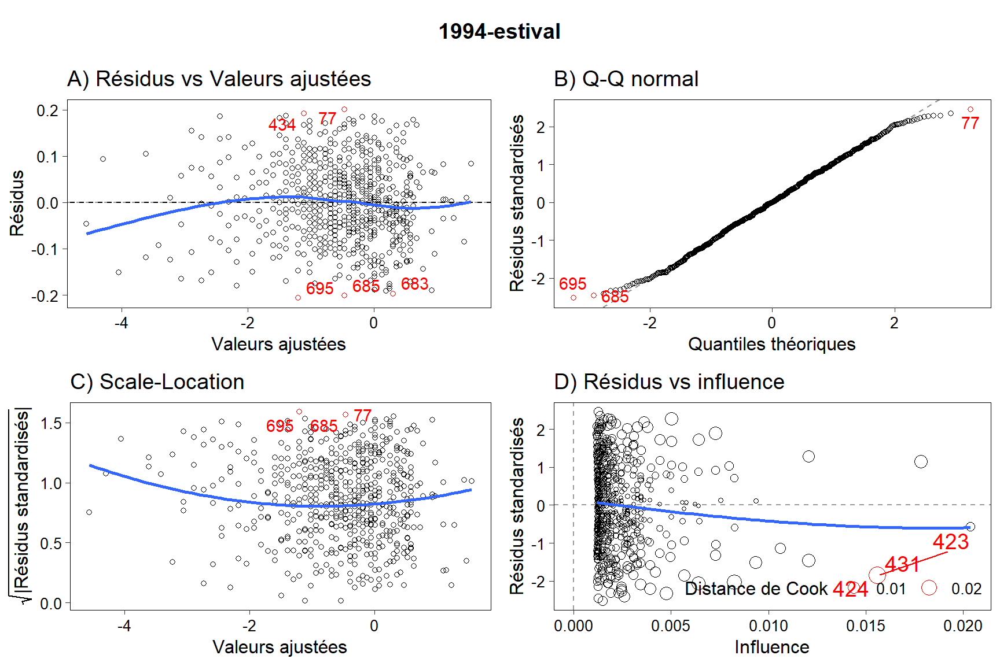
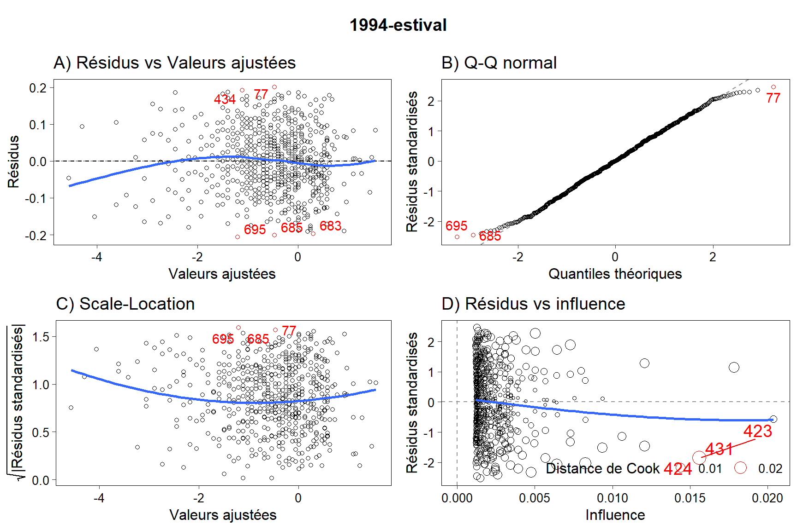
 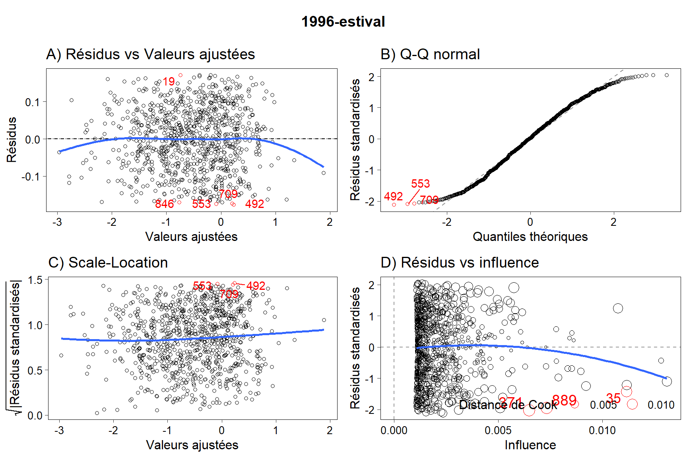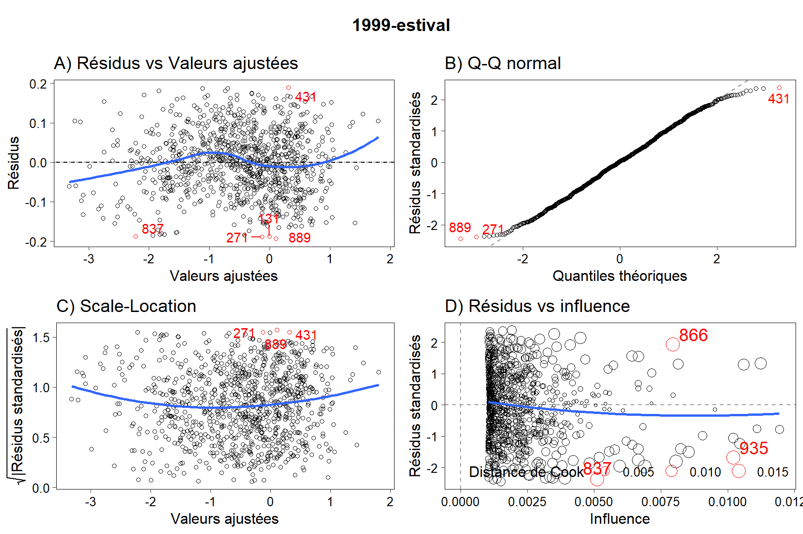
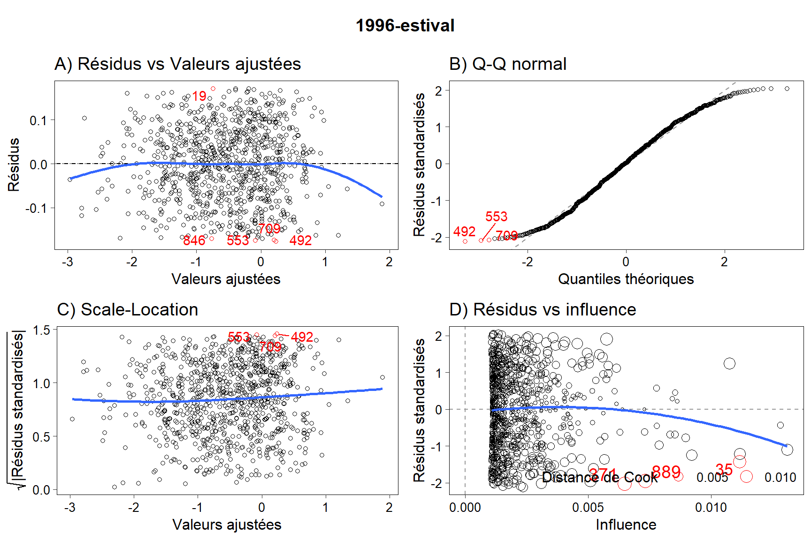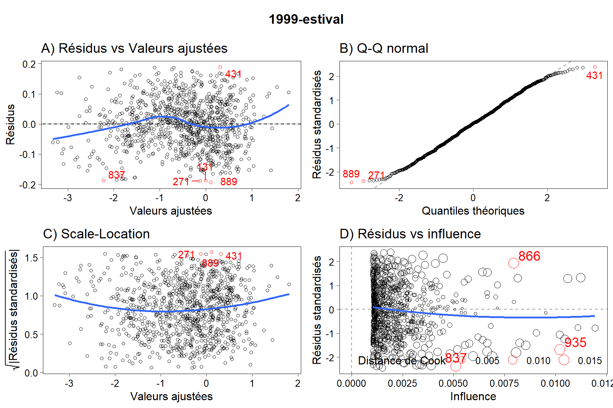


 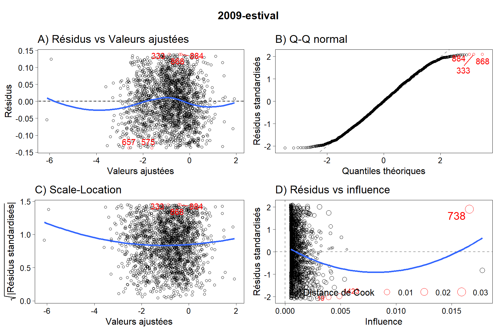
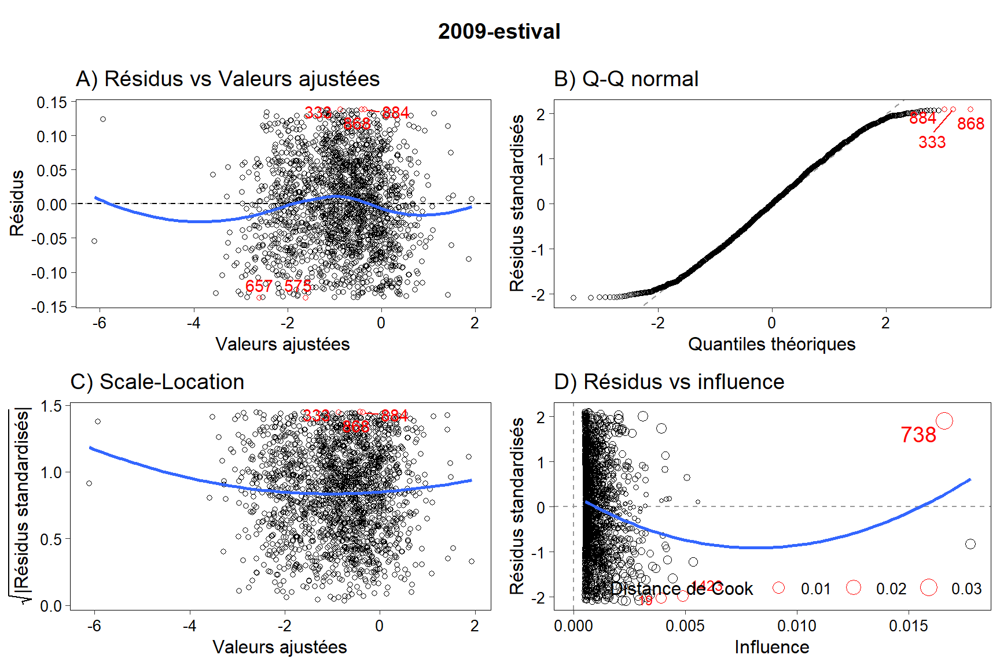 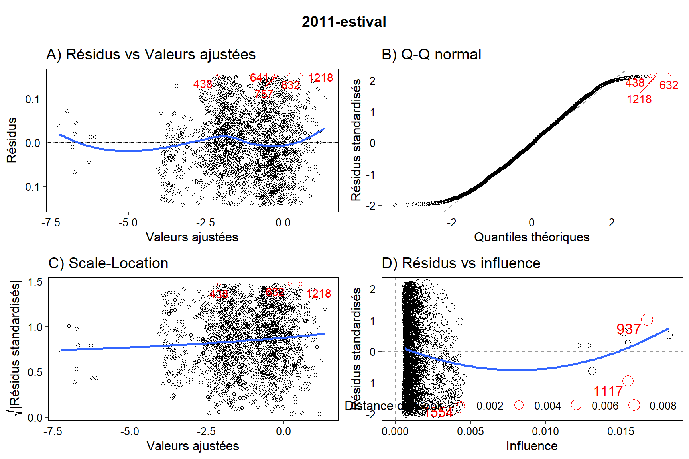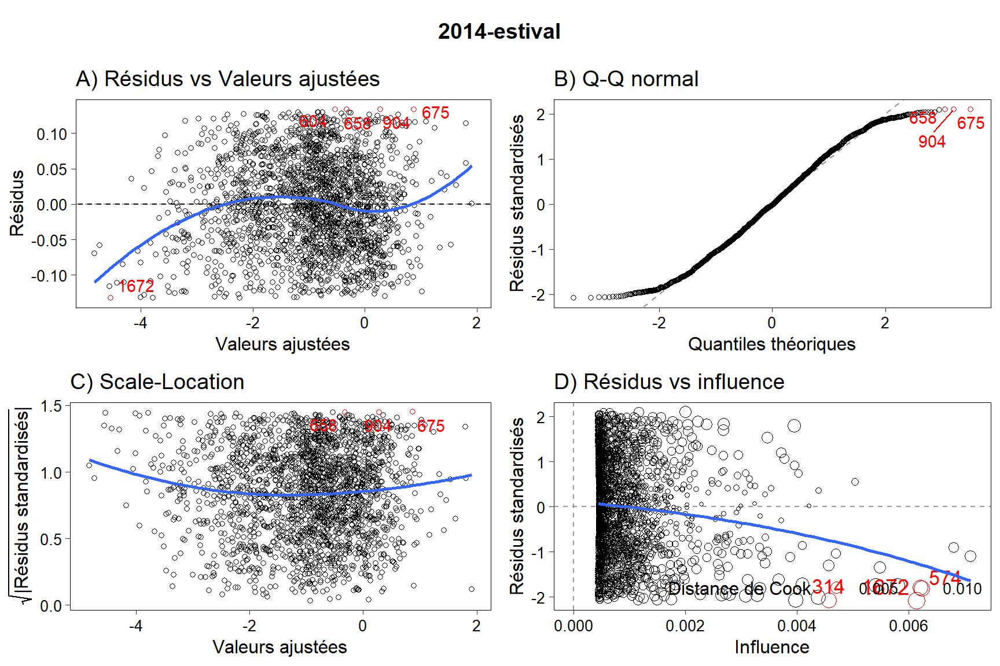
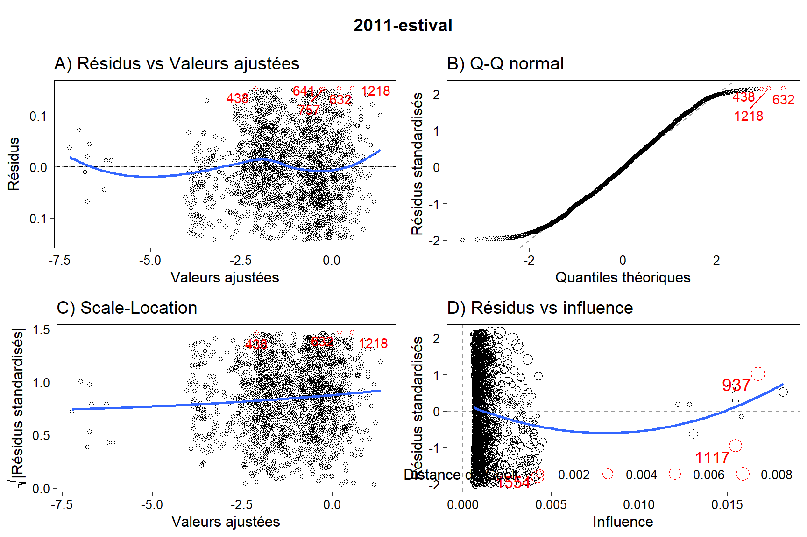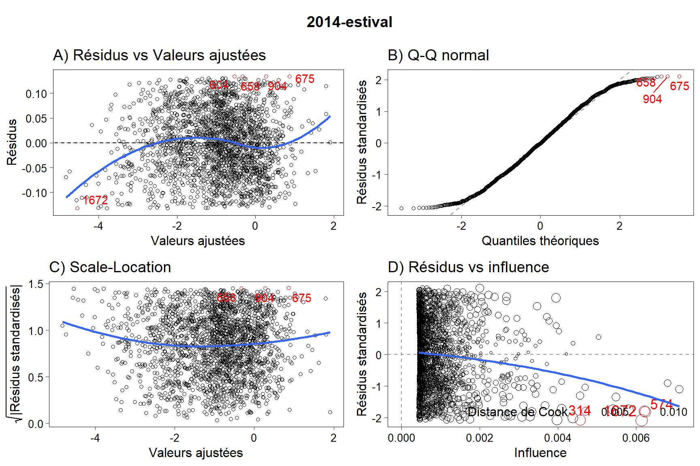


 Après vérification des figures diagnostiques, j’en conclus que chaque régression satisfait aux prémisses d’un modèle de régression linéaire simple.
Après vérification des figures diagnostiques, j’en conclus que chaque régression satisfait aux prémisses d’un modèle de régression linéaire simple.
Maintenant, je vais créer un jeu lw que je vais pouvoir utiliser plus bas.
# fichier de base que je dois remplir
lw <- expand_grid(annee = my_year, mois = 1:12) %>%
mutate(type = ifelse(mois %in% c(1:3, 10:12), "hivernal", "estival")) %>%
arrange(annee, mois)
lw
## # A tibble: 336 x 3
## annee mois type
## <int> <int> <chr>
## 1 1993 1 hivernal
## 2 1993 2 hivernal
## 3 1993 3 hivernal
## 4 1993 4 estival
## 5 1993 5 estival
## 6 1993 6 estival
## 7 1993 7 estival
## 8 1993 8 estival
## 9 1993 9 estival
## 10 1993 10 hivernal
## # ... with 326 more rows
lw <- left_join(lw, rels, by = c("annee", "type"))
cor <- which(with(lw, is.na(n_brute))) # lignes où le merge n'a pas fonctionné
length(cor) # 156 lignes
## [1] 156
unique(lw$type[cor])
## [1] "hivernal"
# Pour ces lignes, on aurait voulu les données du Gadus, mais elles n'existent pas.
# On prend donc les coefficients de la régression estival à la place
dim(lw) # 336 obs et 9 var
## [1] 336 9
lw <- left_join(lw, rels %>% filter(type == "estival") %>% select(-type), by = "annee")
dim(lw) # 336 obs et 15 var
## [1] 336 15
lw$n_brute.x[cor] <- lw$n_brute.y[cor]
lw$n_net.x[cor] <- lw$n_net.y[cor]
lw$intercept.x[cor] <- lw$intercept.y[cor]
lw$slope.x[cor] <- lw$slope.y[cor]
lw$r_squared.x[cor] <- lw$r_squared.y[cor]
lw$source.x[cor] <- lw$source.y[cor]
lw[, c("n_brute.y", "n_net.y", "intercept.y", "slope.y", "r_squared.y", "source.y")] <- NULL # rendu inutile
names(lw) <- gsub("\\.x", "", names(lw))
cor <- which(with(lw, is.na(n_brute))); length(cor) # 0 ligne = tout est beau.
## [1] 0
rm(cor, rels)
dim(lw) # 336 obs et 9 var
## [1] 336 9
save(lw, file = dat_lw)
lw
## # A tibble: 336 x 9
## annee mois type n_brute n_net intercept slope r_squared source
## <int> <int> <chr> <int> <int> <dbl> <dbl> <dbl> <chr>
## 1 1993 1 hivernal 1097 1000 -12.2 3.13 0.995 RH 1993
## 2 1993 2 hivernal 1097 1000 -12.2 3.13 0.995 RH 1993
## 3 1993 3 hivernal 1097 1000 -12.2 3.13 0.995 RH 1993
## 4 1993 4 estival 477 449 -12.0 3.10 0.99 RE 1993
## 5 1993 5 estival 477 449 -12.0 3.10 0.99 RE 1993
## 6 1993 6 estival 477 449 -12.0 3.10 0.99 RE 1993
## 7 1993 7 estival 477 449 -12.0 3.10 0.99 RE 1993
## 8 1993 8 estival 477 449 -12.0 3.10 0.99 RE 1993
## 9 1993 9 estival 477 449 -12.0 3.10 0.99 RE 1993
## 10 1993 10 hivernal 1097 1000 -12.2 3.13 0.995 RH 1993
## # ... with 326 more rows4 Préparation des données
4.1 Échantillonneurs à quai
4.1.1 FL
# Ouverture
load(dat_LF); dim(lf) # 137136 obs et 38 var
## [1] 137136 38
# Variables d'intérêt, bonnes années, pas d'outliers
lf_caa <- lf %>%
filter(annee %in% my_year, outlier == F) %>%
select(annee, mois, opano, engin, longueur, n_mes, ech_id, source)
dim(lf_caa) # 57270 obs et 8 var
## [1] 57270 8
# Regroupements d'engins
load(dat_engin_obs); dim(engins_obs) # 14 obs et 4 var
## [1] 14 4
engins_obs
## # A tibble: 14 x 4
## engin engin_fr engin_en engin_groupe
## <chr> <chr> <chr> <ord>
## 1 GNS Filets maillants calés (ancrés) Set gillnets (anchored) Gillnets
## 2 LLS Palangres calées Set longlines Longlines
## 3 GN Filets maillants (non spécifiés) Gillnets (not specified) Gillnets
## 4 LL Palangres (non spécifiées) Longlines (not specifie~ Longlines
## 5 LLG Palangrotte Handline Hand gear
## 6 FPN Filets-pièges fixes non couverts Stationary uncovered po~ Traps
## 7 LX Hameçons et lignes (non spécifié~ Hooks and lines (not sp~ Hand gear
## 8 OTB2 Chalut de fond à panneaux (arriè~ Stern otter trawls Other trawls
## 9 FIX Pièges (non spécifiés) Traps (not specified) Traps
## 10 SDN Seine danoise, écossaise, ou pai~ Danish, Scotish or pair~ Seines
## 11 LHP Lignes à main et lignes à cannes~ Handlines and pole-line~ Hand gear
## 12 PS Seine bourse Purse seine Seines
## 13 OTM Chalut pélagique Midwater trawl Other trawls
## 14 ST Chalut à crevette Shrimp trawl Shrimp trawl
dim(lf_caa) # 57270 obs et 8 var
## [1] 57270 8
lf_caa <- left_join(lf_caa, engins_obs %>% select(engin, engin_groupe), by = "engin") %>%
mutate(engin_groupe = as.character(engin_groupe)) # je ne veux pas des facteurs
dim(lf_caa) # 57270 obs et 9 var
## [1] 57270 9
table(lf_caa$engin_groupe, useNA = "always") # parfait.
##
## Gillnets Hand gear Longlines Other trawls Seines Shrimp trawl
## 20263 3692 21299 1635 1077 7640
## Traps <NA>
## 1664 0
# zones unitaires de l'OPANO
dim(lf_caa) # 57270 obs et 9 var
## [1] 57270 9
lf_caa <- lf_caa %>% filter(grepl("4R|4S|3Pn", opano))
dim(lf_caa) # 57270 obs et 9 var
## [1] 57270 9
unique(lf_caa$opano) # les valeurs à 2 caractères (4R et 4S) sont des zones unitaires vagues (quelque part dans 4R ou 4S)
## [1] "3Pn" "4R" "4Ra" "4Rb" "4Rc" "4Rd" "4S" "4Si" "4Ss" "4Sv" "4Sw" "4Sx"
## [13] "4Sy" "4Sz"
# Recalcul du poids de l'échantillon
dim(lf_caa) # 57270 obs et 9 var
## [1] 57270 9
lf_caa <- left_join(lf_caa, lw %>% select(annee, mois, intercept, slope), by = c("annee", "mois"))
dim(lf_caa) # 57270 obs et 11 var
## [1] 57270 11
lf_caa$weight.unit <- exp(with(lf_caa, intercept + slope * log(longueur))) # la longueur est déjà en cm. donne le pds en kg
summary(lf_caa$weight.unit) # aucune valeur NA = parfait
## Min. 1st Qu. Median Mean 3rd Qu. Max.
## 0.00044 0.89102 1.62861 1.96531 2.57903 31.92444
# ggplot(data = lf_caa, aes(x = longueur, y = weight.unit)) +
# geom_point(color = "red", alpha = 0.25) +
# labs(x = "Longueur (mm)", y = "Masse (kg)")
lf_caa[, c("intercept", "slope")] <- NULL # rendu inutile
# Classe de longueur: les longueurs sont déjà prises au cm près. je laisse ainsi
# Renomme les colonnes (pour que les noms concordent avec ce que EVB utilise)
names(lf_caa) <- recode(names(lf_caa), "opano" = "region", "engin_groupe" = "gear", "mois" = "period", "annee" = "year",
"longueur" = "length", "n_mes" = "n", "ech_id" = "sample.id")
lf_caa <- lf_caa %>% select(year, period, region, gear, sample.id, length, weight.unit, n, source) Je peux maintenant sauvegarder.
4.1.2 Données biologiques
load(dat_bio); dim(bio) # 105098 obs et 26 var
## [1] 105098 26
names(bio) <- recode(names(bio), "annee" = "year", "mois" = "month", "opano" = "region", "engin" = "gear",
"longueur" = "length", "ech_id" = "sample.id")
bio_caa <- bio %>%
filter(year %in% my_year, outlier == F) %>%
select(year, month, region, gear, length, age, sample.id, source) %>%
as_tibble
dim(bio_caa) # 47294 obs et 8 var
## [1] 47294 8
bio_caa
## # A tibble: 47,294 x 8
## year month region gear length age sample.id source
## <int> <dbl> <chr> <chr> <dbl> <int> <int> <chr>
## 1 2011 7 4Sw GNS 66 7 50722 quai
## 2 1994 5 4Rc LLS 43 5 346 quai
## 3 2014 7 4Sw GNS 54 7 56116 quai
## 4 1995 8 4Sv GN 71 11 1654 quai
## 5 1995 8 4Sw GN 38 4 1825 quai
## 6 1995 10 4Sw GN 43 5 2111 quai
## 7 2019 8 4Si GNS 61 7 64223 quai
## 8 2001 10 4Rc LLS 53 7 15705 quai
## 9 1997 7 4Sw GN 89 10 8296 quai
## 10 2002 8 4Sw GNS 51 6 16168 quai
## # ... with 47,284 more rows
table(bio_caa$age) # toutes les âges sont plausibles
##
## 0 1 2 3 4 5 6 7 8 9 10 11 12 13 14 15
## 72 1516 3274 3982 5280 5423 6749 6397 5667 4080 2415 1304 605 322 112 66
## 16 17 18
## 20 9 1
table(bio_caa$month, useNA = "always") # parfait
##
## 1 2 3 4 5 6 7 8 9 10 11 12 <NA>
## 301 55 129 430 1870 2166 8772 24557 3563 3406 1308 737 0
# Région d'où proviennent les échantillons
unique(bio_caa$region) # les valeurs à 2 caractères (4R et 4S) sont des zones unitaires vagues (quelque part dans 4R ou 4S)
## [1] "4Sw" "4Rc" "4Sv" "4Si" "4Sx" "4Rd" "4Ss" "4Sz" "4Rb" "4S" "3Pn" "4Sy"
## [13] "4R" "4Ra" NA
bio_caa %>% filter(is.na(region)) %>% pull(source) %>% unique # normal
## [1] "nGSL"
# Regroupements d'engins
dim(bio_caa) # 47294 obs et 8 var
## [1] 47294 8
bio_caa <- left_join(bio_caa, engins_obs %>% select(engin, engin_groupe), by = c("gear" = "engin")) %>%
mutate(engin_groupe = as.character(engin_groupe)) # je ne veux pas des facteurs
dim(bio_caa) # 47294 obs et 9 var
## [1] 47294 9
table(bio_caa$engin_groupe, useNA = "always") # parfait.
##
## Gillnets Hand gear Longlines Other trawls Seines Shrimp trawl
## 9913 648 14501 914 866 19913
## Traps <NA>
## 539 0
bio_caa$gear <- NULL # inutile maintenant
# Classe de longueur: les longueurs sont déjà prises au cm près. je laisse ainsi
# Renomme les colonnes (pour que les noms concordent avec ce que EVB utilise)
names(bio_caa) <- recode(names(bio_caa), "engin_groupe" = "gear", "month" = "period")
bio_caa <- bio_caa %>% select(year, period, region, gear, sample.id, length, age, source)Je peux maintenant sauvegarder.
4.2 Débarquements
load(dat_catch); dim(catch) # 593461 obs et 13 var
## [1] 593461 13
names(catch) <- recode(names(catch), "annee" = "year", "mois" = "period", "opano" = "region", "engin" = "gear")
catch <- catch %>% filter(year %in% my_year) %>% select(year, period, region, gear, catch)
dim(catch) # 331398 obs et 5 var
## [1] 331398 5
# Regroupements d'engins
dim(catch) # 331398 obs et 5 var
## [1] 331398 5
load(dat_engin_deb) # engins_deb
catch <- left_join(catch, engins_deb %>% select(engin, engin_groupe), by = c("gear" = "engin")) %>%
mutate(gear = engin_groupe) %>%
select(-engin_groupe)
dim(catch) # 331398 obs et 5 var
## [1] 331398 5
table(catch$gear, useNA = "always") # 0 valeurs NA = parfait.
##
## Shrimp trawl Other trawls Seines Gillnets
## 1767 8351 4514 163975
## Longlines Hand gear Traps Others / unknown
## 112523 36221 3936 111
## <NA>
## 0
# total catch by level
catch_caa <- catch %>%
group_by(year, region, period, gear) %>% # regroupe par strate
summarise(catch = sum(catch, na.rm = T)) %>%
ungroup %>%
filter(catch > 0) %>% # pour une raison inconnue, on pouvait avoir des strates avec 0 kg débarqué...
select(year, period, region, gear, catch) %>%
mutate(gear = as.character(gear)) # je ne veux pas des facteurs
dim(catch_caa) # 4591 obs et 5 var
## [1] 4591 5
if (langue == "fr"){
misc <- "Autres / inconnus"
} else {
misc <- "Others / unknown"
}
cor <- which(with(catch_caa, gear == misc)); length(cor) # 49 strates où l'engin est "Autres / inconnus"
## [1] 49
# Pour les besoins de la cause, je remplace par NA. get.samples() comprendra que je veux qu'il cherche dans tous les types d'engins
catch_caa$gear[cor] <- NA
save(catch_caa, file = paste0(result, "03_catch_caa.Rda"))
rm(cor)Les données de débarquements sont en kg.
5 Calculs à l’âge
5.1 Sélection des échantillons
Je fais le calcul en 2 étapes: - Strates associées aux chaluts à crevettes - Autres strates
La raison est que je ne veux utiliser les données des observateurs à quai / relevé nGSL QUE pour ces strates et pas les autres.
# Strates avec chalut à crevettes
intrant_catch <- catch_caa %>% filter(gear == "Shrimp trawl") %>% as.data.frame
intrant_lf <- lf_caa %>% filter(gear == "Shrimp trawl", source == "observateur") %>% select(-source) %>% as.data.frame
intrant_bio <- bio_caa %>% filter(gear == "Shrimp trawl", source == "nGSL") %>% select(-source) %>% as.data.frame
caa_all_crev <- get.samples(catch = intrant_catch,
lf = intrant_lf,
al = intrant_bio,
min.lf.samples = 2, # min samples for length-frequency
min.al.samples = 1, # min samples for age-length key. Différent ici puisque les âges de nGSL
# sont vues comme un seul échantillon...
min.al.fish = 100, # min number of fish required in alk
period.unit = "month",
prob.al = 0.95,
subsample = TRUE) %>%
as_tibble
##
|
| | 0%
|
|= | 1%
|
|= | 2%
|
|== | 3%
|
|=== | 4%
|
|=== | 5%
|
|==== | 6%
|
|===== | 7%
|
|====== | 8%
|
|======= | 9%
|
|======= | 10%
|
|======== | 11%
|
|========= | 12%
|
|========= | 13%
|
|========== | 14%
|
|========== | 15%
|
|=========== | 16%
|
|============ | 17%
|
|============ | 18%
|
|============= | 19%
|
|============== | 20%
|
|============== | 21%
|
|=============== | 21%
|
|================ | 22%
|
|================ | 23%
|
|================= | 24%
|
|================== | 25%
|
|================== | 26%
|
|=================== | 27%
|
|==================== | 28%
|
|==================== | 29%
|
|===================== | 30%
|
|====================== | 31%
|
|====================== | 32%
|
|======================= | 33%
|
|======================== | 34%
|
|======================== | 35%
|
|========================= | 36%
|
|========================== | 36%
|
|========================== | 37%
|
|=========================== | 38%
|
|=========================== | 39%
|
|============================ | 40%
|
|============================= | 41%
|
|============================= | 42%
|
|============================== | 43%
|
|=============================== | 44%
|
|=============================== | 45%
|
|================================ | 46%
|
|================================= | 47%
|
|================================= | 48%
|
|================================== | 49%
|
|=================================== | 50%
|
|==================================== | 51%
|
|===================================== | 52%
|
|===================================== | 53%
|
|====================================== | 54%
|
|======================================= | 55%
|
|======================================= | 56%
|
|======================================== | 57%
|
|========================================= | 58%
|
|========================================= | 59%
|
|========================================== | 60%
|
|=========================================== | 61%
|
|=========================================== | 62%
|
|============================================ | 63%
|
|============================================ | 64%
|
|============================================= | 64%
|
|============================================== | 65%
|
|============================================== | 66%
|
|=============================================== | 67%
|
|================================================ | 68%
|
|================================================ | 69%
|
|================================================= | 70%
|
|================================================== | 71%
|
|================================================== | 72%
|
|=================================================== | 73%
|
|==================================================== | 74%
|
|==================================================== | 75%
|
|===================================================== | 76%
|
|====================================================== | 77%
|
|====================================================== | 78%
|
|======================================================= | 79%
|
|======================================================== | 79%
|
|======================================================== | 80%
|
|========================================================= | 81%
|
|========================================================== | 82%
|
|========================================================== | 83%
|
|=========================================================== | 84%
|
|============================================================ | 85%
|
|============================================================ | 86%
|
|============================================================= | 87%
|
|============================================================= | 88%
|
|============================================================== | 89%
|
|=============================================================== | 90%
|
|=============================================================== | 91%
|
|================================================================ | 92%
|
|================================================================= | 93%
|
|================================================================== | 94%
|
|=================================================================== | 95%
|
|=================================================================== | 96%
|
|==================================================================== | 97%
|
|===================================================================== | 98%
|
|===================================================================== | 99%
|
|======================================================================| 100%
dim(caa_all_crev) # 3575 obs et 36 var
## [1] 3575 36
table(caa_all_crev$option.lengthfreq, useNA = "always") # ok
##
## 1 2 3 4 5 7 8 11 <NA>
## 680 343 369 239 1852 10 46 36 0
table(caa_all_crev$option.agelength, useNA = "always") # toujours 9, 10 ou 11
##
## 9 10 11 <NA>
## 436 586 2553 0
# Autres strates
cor <- which(!with(catch_caa, gear == "Shrimp trawl" & !is.na(gear))); length(cor) # 4484
## [1] 4484
intrant_catch <- catch_caa[cor, ] %>% as.data.frame
intrant_lf <- lf_caa %>% filter(source != "observateur") %>% select(-source) %>% as.data.frame
intrant_bio <- bio_caa %>% filter(source != "nGSL") %>% select(-source) %>% as.data.frame
caa_all_aut <- get.samples(catch = intrant_catch,
lf = intrant_lf,
al = intrant_bio,
min.lf.samples = 2, # min samples for length-frequency
min.al.samples = 2, # min samples for age-length key
min.al.fish = 100, # min number of fish required in alk
period.unit = "month",
prob.al = 0.95,
subsample = TRUE) %>%
as_tibble
##
|
| | 0%
|
| | 1%
|
|= | 1%
|
|= | 2%
|
|== | 2%
|
|== | 3%
|
|== | 4%
|
|=== | 4%
|
|=== | 5%
|
|==== | 5%
|
|==== | 6%
|
|===== | 6%
|
|===== | 7%
|
|===== | 8%
|
|====== | 8%
|
|====== | 9%
|
|======= | 9%
|
|======= | 10%
|
|======= | 11%
|
|======== | 11%
|
|======== | 12%
|
|========= | 12%
|
|========= | 13%
|
|========= | 14%
|
|========== | 14%
|
|========== | 15%
|
|=========== | 15%
|
|=========== | 16%
|
|============ | 16%
|
|============ | 17%
|
|============ | 18%
|
|============= | 18%
|
|============= | 19%
|
|============== | 19%
|
|============== | 20%
|
|============== | 21%
|
|=============== | 21%
|
|=============== | 22%
|
|================ | 22%
|
|================ | 23%
|
|================ | 24%
|
|================= | 24%
|
|================= | 25%
|
|================== | 25%
|
|================== | 26%
|
|=================== | 26%
|
|=================== | 27%
|
|=================== | 28%
|
|==================== | 28%
|
|==================== | 29%
|
|===================== | 29%
|
|===================== | 30%
|
|===================== | 31%
|
|====================== | 31%
|
|====================== | 32%
|
|======================= | 32%
|
|======================= | 33%
|
|======================= | 34%
|
|======================== | 34%
|
|======================== | 35%
|
|========================= | 35%
|
|========================= | 36%
|
|========================== | 36%
|
|========================== | 37%
|
|========================== | 38%
|
|=========================== | 38%
|
|=========================== | 39%
|
|============================ | 39%
|
|============================ | 40%
|
|============================ | 41%
|
|============================= | 41%
|
|============================= | 42%
|
|============================== | 42%
|
|============================== | 43%
|
|============================== | 44%
|
|=============================== | 44%
|
|=============================== | 45%
|
|================================ | 45%
|
|================================ | 46%
|
|================================= | 46%
|
|================================= | 47%
|
|================================= | 48%
|
|================================== | 48%
|
|================================== | 49%
|
|=================================== | 49%
|
|=================================== | 50%
|
|=================================== | 51%
|
|==================================== | 51%
|
|==================================== | 52%
|
|===================================== | 52%
|
|===================================== | 53%
|
|===================================== | 54%
|
|====================================== | 54%
|
|====================================== | 55%
|
|======================================= | 55%
|
|======================================= | 56%
|
|======================================== | 56%
|
|======================================== | 57%
|
|======================================== | 58%
|
|========================================= | 58%
|
|========================================= | 59%
|
|========================================== | 59%
|
|========================================== | 60%
|
|========================================== | 61%
|
|=========================================== | 61%
|
|=========================================== | 62%
|
|============================================ | 62%
|
|============================================ | 63%
|
|============================================ | 64%
|
|============================================= | 64%
|
|============================================= | 65%
|
|============================================== | 65%
|
|============================================== | 66%
|
|=============================================== | 66%
|
|=============================================== | 67%
|
|=============================================== | 68%
|
|================================================ | 68%
|
|================================================ | 69%
|
|================================================= | 69%
|
|================================================= | 70%
|
|================================================= | 71%
|
|================================================== | 71%
|
|================================================== | 72%
|
|=================================================== | 72%
|
|=================================================== | 73%
|
|=================================================== | 74%
|
|==================================================== | 74%
|
|==================================================== | 75%
|
|===================================================== | 75%
|
|===================================================== | 76%
|
|====================================================== | 76%
|
|====================================================== | 77%
|
|====================================================== | 78%
|
|======================================================= | 78%
|
|======================================================= | 79%
|
|======================================================== | 79%
|
|======================================================== | 80%
|
|======================================================== | 81%
|
|========================================================= | 81%
|
|========================================================= | 82%
|
|========================================================== | 82%
|
|========================================================== | 83%
|
|========================================================== | 84%
|
|=========================================================== | 84%
|
|=========================================================== | 85%
|
|============================================================ | 85%
|
|============================================================ | 86%
|
|============================================================= | 86%
|
|============================================================= | 87%
|
|============================================================= | 88%
|
|============================================================== | 88%
|
|============================================================== | 89%
|
|=============================================================== | 89%
|
|=============================================================== | 90%
|
|=============================================================== | 91%
|
|================================================================ | 91%
|
|================================================================ | 92%
|
|================================================================= | 92%
|
|================================================================= | 93%
|
|================================================================= | 94%
|
|================================================================== | 94%
|
|================================================================== | 95%
|
|=================================================================== | 95%
|
|=================================================================== | 96%
|
|==================================================================== | 96%
|
|==================================================================== | 97%
|
|==================================================================== | 98%
|
|===================================================================== | 98%
|
|===================================================================== | 99%
|
|======================================================================| 99%
|
|======================================================================| 100%
dim(caa_all_aut) # 226241 obs et 36 var
## [1] 226241 36
table(caa_all_aut$option.lengthfreq, useNA = "always") # ok
##
## 1 2 3 4 5 6 <NA>
## 11173 13499 56540 40520 39714 64795 0
table(caa_all_aut$option.agelength, useNA = "always") # ok
##
## 1 2 3 4 5 6 7 8 9 10 11 12 <NA>
## 3117 8200 35527 55153 49235 69290 235 653 1588 1128 752 1363 0
# Combinaison
val_max <- max(caa_all_aut$id); val_max
## [1] 4484
caa_all_crev <- caa_all_crev %>% mutate(id = id + val_max) # pour ne pas avoir de doublons d'ids
caa_all <- bind_rows(caa_all_aut, caa_all_crev)
dim(caa_all) # 229816 obs et 38 var
## [1] 229816 38
n_distinct(caa_all$id) == nrow(catch_caa) # vrai
## [1] TRUE
ids <- grep("age.", names(caa_all)); ids
## [1] 16 17 18 19 20 21 22 23 24 25 26 27 28 29 30 31 32 34 36 37 38
caa_all <- caa_all %>%
mutate_at(.vars = ids, .funs = function(x) ifelse(is.na(x), 0, x)) # à cause du bind_rows
save(caa_all, file = dat_caa_raw)
rm(caa_all_aut, caa_all_crev, ids)5.2 Calculs à l’âge
# 1) Calculs à l'âge avec le groupe+ (pour caan seulement)
caa <- get.caa(x = caa_all, plus = 13) %>% as_tibble # on utilise un groupe d'âge 13+
dim(caa) # 392 obs et 8 var
## [1] 392 8
cor <- which(with(caa, age == 13)); length(cor) # 28 lignes
## [1] 28
caa$age[cor] <- "13+"
# 2) Calculs à l'âge sans le groupe+ (pour les autres mesures)
caa2 <- get.caa(x = caa_all) %>% as_tibble
dim(caa2) # 532 obs et 8 var
## [1] 532 8
# 3) Combinaison
caa <- list("avec_plus" = caa, "sans_plus" = caa2) # dans une liste pour éviter la confusion
save(caa, file = dat_caa_processed)
rm(caa2, bio, catch, engins_deb, engins_obs, lf, intrant_catch, intrant_lf, intrant_bio)6 Exemple pour le resdoc
J’y vais avec la strate: 2005–June–4Rb–Gillnet.
catch <- catch_caa %>% filter(year == 2005, period == 6, region == "4Rb", gear == "Gillnets")
C <- catch$catch; C
## [1] 1393
y <- catch$year; y
## [1] 2005
p <- catch$period; p
## [1] 6
r <- catch$region; r
## [1] "4Rb"
g <- catch$gear; g
## [1] "Gillnets"
find.samples <- function(df,o,y,p,r,g,period.unit){
df$date <- with(df, ymd(paste(year, period, '01')))
d <- ymd(paste(y, p, '01')) # date (for semesters this will be month 1 to 4, but that doesn't matter)
dn <- d # neigbouring dates. If no period data, all periods of the same year are allowed (so option 1 and 2 are the same)
if (length(p) == 1){ # If period data; normal way
dn <- d %m+% months(c(-1, 0, 1)) # neigbouring dates
if (period.unit == 'quarter'){ # cheat and replace december with last quarter
month(dn[which(month(dn) == 12)]) <- 4
}
}
pn <- month(dn) # neigbouring periods
yn <- y + c(-1, 0, 1) # neigbouring years
switch(as.character(o),
'1' = {id <- with(df, date %in% d & gear %in% g & region %in% r)},
'2' = {id <- with(df, date %in% dn & gear %in% g & region %in% r)},
'3' = {id <- with(df, date %in% d & gear %in% g)},
'4' = {id <- with(df, date %in% dn & gear %in% g)},
'5' = {id <- with(df, year %in% y & gear %in% g)},
'6' = {id <- with(df, year %in% y)},
'7' = {id <- with(df, year %in% yn & period %in% p & gear %in% g & region %in% r)},
'8' = {id <- with(df, year %in% yn & period %in% pn & gear %in% g & region %in% r)},
'9' = {id <- with(df, year %in% yn & period %in% p & gear %in% g)},
'10' = {id <- with(df, year %in% yn & period %in% pn & gear %in% g)},
'11' = {id <- with(df, year %in% yn & gear %in% g)},
'12' = {id <- with(df, year %in% yn)})
return(id)
}
lf <- lf_caa %>% filter(source == "quai") %>% select(-source)
al <- bio_caa %>% filter(source == "quai") %>% select(-source)
period.unit <- "month"
library(lubridate)
cacol <- c('year', 'period', 'region', 'gear', 'catch') # required columns in catch
lfcol <- c('year', 'period', 'region', 'gear', 'sample.id', 'length', 'weight.unit', 'n') # required columns in lf
alcol <- c('year', 'period', 'region', 'gear', 'sample.id', 'length', 'age') # required columns in al
# Recherche LF
# Niveau 1
o.lf <- 1
id <- find.samples(lf,o.lf,y,p,r,g,period.unit) # find samples according to step o
this.lf <- lf[id, ] # select them
n.lf <- nrow(unique(this.lf[,lfcol[1:5]])); n.lf # count unique samples
## [1] 1
# Pas assez d'échantillon, vais au niveau 2
# Niveau 2
o.lf <- 2
id <- find.samples(lf,o.lf,y,p,r,g,period.unit) # find samples according to step o
this.lf <- lf[id, ] # select them
n.lf <- nrow(unique(this.lf[,lfcol[1:5]])); n.lf # count unique samples
## [1] 15
# 15 échantillons. Reste au niveau 2.
sum(this.lf$n) # 2306 poissons mesurés pour la FL
## [1] 2306
# Création de la clé âge-longueur globale
alg <- table(al$length,al$age)
alg <- prop.table(alg,1)
alg <- cbind(length=as.numeric(rownames(alg)),data.frame(rbind(alg)))
le <- expand.grid(length = seq(min(c(alg$length, lf$length)), max(c(alg$length, lf$length)), min(diff(alg$length))))
alg <- merge(le,alg)
library(nnet)
fill.multinom <- function(df, acol, lcol, id=NULL, smooth=FALSE){
alen <- as.matrix(df[,acol,drop=FALSE])
len <- df[,lcol]
if(ncol(alen) == 1){ # if there is only one age class than the likelihood is always 1??
new <- rep(1, nrow(alen))
warning(paste0('** for catch stratum ', id, ' only one age class was found **'))
}else{ # model if there are multiple age classes
m <- multinom(alen~len, trace = F, maxit = 1500)
if (m$convergence != 0) warning(paste('** Non-convergence when filling gaps for id', id))
new <- predict(m, newdata = data.frame(len = df$length), type = "probs") # predictions for all lengths found in df
new <- round(new, 3) # acceptable precision level (to avoid 0.0000001 % chances of absurd age-length combos)
}
# replace onle NAs or everything by predictions
if(smooth){
df[, acol] <- new
} else {
df[, acol][is.na(df[, acol])] <- new[is.na(df[, acol])]
}
return(df)
}
alg <- fill.multinom(df = alg, acol = 2:ncol(alg), lcol = 1, id='global', smooth = TRUE)
# Recherche Age
# Niveau 1
o.al <- 1
id <- find.samples(al,o.al,y,p,r,g,period.unit)
this.al <- al[id,] # select them
n.al <- nrow(unique(this.al[,alcol[1:5]])); n.al # count unique samples
## [1] 0
# Pas assez d'échantillon, vais au niveau 2
# Niveau 2
o.al <- 2
id <- find.samples(al,o.al,y,p,r,g,period.unit)
this.al <- al[id,] # select them
n.al <- nrow(unique(this.al[,alcol[1:5]])); n.al # 12 échantillons = critère 1 ok
## [1] 12
f.al <- nrow(this.al); f.al # 227 poissons, critère 2 ok
## [1] 227
# Tableau pour le resdoc
temp <- this.lf %>%
group_by(length) %>%
summarise(n_fl = sum(n)) %>%
ungroup %>%
left_join(., this.al %>%
group_by(length) %>%
summarise(n_al = n()) %>%
ungroup, by = "length")
# Longueurs ne nécessitant pas alg
avec <- temp %>% filter(!is.na(n_al)); avec
## # A tibble: 49 x 3
## length n_fl n_al
## <dbl> <dbl> <int>
## 1 49 1 1
## 2 50 4 3
## 3 51 17 8
## 4 52 17 6
## 5 53 30 5
## 6 54 42 1
## 7 55 70 9
## 8 56 96 8
## 9 57 98 6
## 10 58 136 3
## # ... with 39 more rows
alk <- this.al %>%
group_by(length, age) %>%
count %>%
group_by(length) %>%
mutate(prop = n / sum(n)) %>%
ungroup %>%
pivot_wider(id_cols = "length", names_from = "age", names_prefix = "X", values_from = prop)
alk
## # A tibble: 49 x 12
## length X5 X4 X6 X7 X8 X9 X11 X10 X14 X12
## <dbl> <dbl> <dbl> <dbl> <dbl> <dbl> <dbl> <dbl> <dbl> <dbl> <dbl>
## 1 49 1 NA NA NA NA NA NA NA NA NA
## 2 50 0.667 0.333 NA NA NA NA NA NA NA NA
## 3 51 0.25 0.125 0.375 0.25 NA NA NA NA NA NA
## 4 52 0.333 NA 0.167 0.333 0.167 NA NA NA NA NA
## 5 53 NA NA NA 0.6 0.2 0.2 NA NA NA NA
## 6 54 NA NA NA 1 NA NA NA NA NA NA
## 7 55 0.111 NA 0.111 0.333 NA 0.444 NA NA NA NA
## 8 56 NA NA 0.125 0.625 0.125 NA 0.125 NA NA NA
## 9 57 NA NA NA 0.833 0.167 NA NA NA NA NA
## 10 58 NA NA NA 0.667 NA NA 0.333 NA NA NA
## # ... with 39 more rows, and 1 more variable: X13 <dbl>
avec <- left_join(avec, alk, by = "length")
# Longueurs nécessitant alg
manque <- temp %>% filter(is.na(n_al)) %>% mutate(n_al = 0); manque
## # A tibble: 1 x 3
## length n_fl n_al
## <dbl> <dbl> <dbl>
## 1 27 8 0
manque <- left_join(manque, alg %>% filter(length == 27), by = "length")
table1 <- bind_rows(manque %>% mutate(length = as.character(length)),
avec[1:7, ] %>% mutate(length = as.character(length)),
tibble(length = "..."),
avec[nrow(avec), ] %>% mutate(length = as.character(length))) %>%
mutate_at(.vars = 1:3, .funs = function(x) ifelse(is.na(x), "", x)) %>%
mutate_at(.vars = 4:ncol(.),
.funs = function(x) ifelse(is.na(x)|x == 0, "", format(x, digits = 3, nsmall = 3, decimal.mark = dm)))
ages_alk <- this.al %>% pull(age) %>% sort %>% unique; ages_alk # âges déjà dans la clé âge-longueur
## [1] 4 5 6 7 8 9 10 11 12 13 14
ages_alg <- setdiff(names(alg) %>% gsub("X", "", .) %>% .[2:length(.)], ages_alk); ages_alg # âges dans alg
## [1] "2" "3" "15" "16" "17" "18"
ages_manque <- setdiff(ages_alg, ages_alk); ages_manque
## [1] "2" "3" "15" "16" "17" "18"
ages_dispo <- bio_caa %>% filter(year %in% c(y-1, y, y + 1)) %>% pull(age) %>% sort %>% unique
ages_dispo <- setdiff(ages_dispo, ages_alk)
ages_manque <- setdiff(ages_manque, ages_dispo)
# https://stackoverflow.com/questions/53188034/change-background-colour-of-knitrkable-headers
names(table1) <- gsub("X", "", names(table1))
cor <- which(names(table1) %in% ages_alk)
names(table1)[cor] <- cell_spec(names(table1)[cor], background = "green", format = "latex")
cor <- which(names(table1) %in% ages_manque)
names(table1)[cor] <- cell_spec(names(table1)[cor], background = "red", format = "latex")
cor <- which(names(table1) %in% ages_dispo)
names(table1)[cor] <- cell_spec(names(table1)[cor], background = "yellow", format = "latex")
rm(lf, al, C, y, p, r, g, period.unit, cacol, alcol, lfcol, o.lf, n.al, n.lf, le,
o.al, this.al, temp, this.lf, alg, avec, alk, manque, ages_alk, ages_manque, cor)7 Calculs pour le resdoc
nrow(catch_caa) # 4591 strates année-mois-OPANO-engin utilisées
## [1] 4591
# FL
caa_all %>%
group_by(id) %>%
summarise(option_fl = unique(option.lengthfreq)) %>%
group_by(option_fl) %>%
count() %>%
ungroup %>%
mutate(perc = n / sum(n) * 100,
perc_cum = cumsum(perc))
## # A tibble: 9 x 4
## option_fl n perc perc_cum
## <dbl> <int> <dbl> <dbl>
## 1 1 310 6.75 6.75
## 2 2 343 7.47 14.2
## 3 3 1237 26.9 41.2
## 4 4 873 19.0 60.2
## 5 5 823 17.9 78.1
## 6 6 1001 21.8 99.9
## 7 7 1 0.0218 99.9
## 8 8 2 0.0436 100.
## 9 11 1 0.0218 100
caa_all %>%
filter(gear == "Shrimp trawl", option.lengthfreq > 6) %>%
distinct(id, year, period, region, gear, option.lengthfreq)
## # A tibble: 4 x 6
## id year period region gear option.lengthfreq
## <int> <dbl> <dbl> <chr> <chr> <dbl>
## 1 4543 1995 6 4Rb Shrimp trawl 11
## 2 4544 1995 4 4Si Shrimp trawl 7
## 3 4545 1995 5 4Si Shrimp trawl 8
## 4 4546 1995 5 4Ss Shrimp trawl 8
# La majorité des strates atteignaient le niveau requis d'échantillon <= niveau 4. Les niveaux 7 à 12 n'ont été utilisé que pour
# 4 strates, toutes de 1995 et avec le chalut à crevettes
# ALK
caa_all %>%
group_by(id) %>%
summarise(option_age = unique(option.agelength)) %>%
group_by(option_age) %>%
count() %>%
ungroup %>%
mutate(perc = n / sum(n) * 100,
perc_cum = cumsum(perc))
## # A tibble: 12 x 4
## option_age n perc perc_cum
## <dbl> <int> <dbl> <dbl>
## 1 1 64 1.39 1.39
## 2 2 178 3.88 5.27
## 3 3 743 16.2 21.5
## 4 4 1208 26.3 47.8
## 5 5 986 21.5 69.2
## 6 6 1183 25.8 95.0
## 7 7 5 0.109 95.1
## 8 8 14 0.305 95.4
## 9 9 43 0.937 96.4
## 10 10 45 0.980 97.3
## 11 11 93 2.03 99.4
## 12 12 29 0.632 100
caa_all %>%
group_by(id) %>%
summarise(option_age = unique(option.agelength)) %>%
group_by(option_age) %>%
count() %>%
ungroup %>%
mutate(perc = n / sum(n) * 100) %>%
filter(option_age > 6) %>%
pull(perc) %>% sum
## [1] 4.98802
caa_all %>%
filter(option.agelength > 6) %>%
distinct(id, year, gear) %>%
group_by(gear) %>%
summarise(n = n(),
year = paste(as.character(sort(unique(year))), collapse = ", ")) %>%
ungroup
## # A tibble: 7 x 3
## gear n year
## <chr> <int> <chr>
## 1 Gillnets 46 2003
## 2 Hand gear 2 2003
## 3 Longlines 47 2003
## 4 Other traw~ 17 2003
## 5 Seines 7 2003
## 6 Shrimp tra~ 107 1993, 1994, 1995, 1996, 1997, 1998, 1999, 2000, 2001, 2002,~
## 7 Traps 3 2003
# La presque majorité des strates atteignaient le niveau requis d'échantillons <= niveau 4.
# Moins de 5 % des strates utilisent les niveaux 7-12. Pour les engins autres que le chalut à crevettes,
# on parle toujours de l'année 2003.
caa_all %>% group_by(id) %>% summarise(nb = unique(nsample.lengthfreq)) %>% pull(nb) %>% summary
## Min. 1st Qu. Median Mean 3rd Qu. Max.
## 2.00 3.00 6.00 18.48 17.00 778.00
# Les strates avaient en moyenne 18.48 échantillons pour faire leur FL (med = 6, min = 2, max = 778)
caa_all %>% group_by(id) %>% summarise(nb = sum(n.lf)) %>% ungroup %>% pull(nb) %>% summary
## Min. 1st Qu. Median Mean 3rd Qu. Max.
## 2.0 479.5 880.0 1881.3 2151.0 26468.0
# Les strates avaient en moyenne 1881.3 morues pour faire leur FL (med = 880, min = 2, max = 26468)
caa_all %>% group_by(id) %>% summarise(nb = unique(nsample.agelength)) %>% pull(nb) %>% summary
## Min. 1st Qu. Median Mean 3rd Qu. Max.
## 2.00 5.00 10.00 22.97 22.00 522.00
# Les strates avaient en moyenne 22.97 échantillons pour faire leur clé âge-longueur (med = 10, min = 2, max = 522)
caa_all %>% group_by(id) %>% summarise(nb = unique(n.altot)) %>% pull(nb) %>% summary
## Min. 1st Qu. Median Mean 3rd Qu. Max.
## 3.0 161.0 260.0 431.8 585.0 2887.0
# Les strates avaient en moyenne 431.8 morues pour faire leur clé âge-longueur (med = 260, min = 3, max = 2887)
caa_all %>%
filter(gear == "Shrimp trawl") %>%
group_by(option.agelength) %>%
summarise(n = n_distinct(id)) %>%
ungroup
## # A tibble: 3 x 2
## option.agelength n
## <dbl> <int>
## 1 9 9
## 2 10 21
## 3 11 77Est-ce que j’avais au moins 1 échantillon de FL/âge par strate \(k\) avant de faire ma recherche pour des échantillons?
# Échantillons de fréquences de longueur
n_distinct(lf_caa$sample.id) # 3969 échantillons de FL pour la série 1993-2020
## [1] 3969
ajout <- lf_caa %>%
group_by(year, period, region, gear) %>%
summarise(nb_samples = n_distinct(sample.id)) %>%
ungroup %>%
mutate(gear = as.character(gear))
left_join(catch_caa, ajout, by = c("year", "period", "region", "gear")) %>%
filter(!is.na(nb_samples)) %>%
nrow() / nrow(catch_caa) * 100
## [1] 11.58789
# 11.58 % des strates contenaient >= 1 échantillon au départ.
# Par année, ça ressemble à quoi?
temp <- left_join(catch_caa, ajout, by = c("year", "period", "region", "gear")) %>%
group_by(year) %>%
summarise(n_tot = n(),
n_strates = NROW(year[!is.na(nb_samples)]),
perc = n_strates / n_tot * 100) %>%
ungroup %>%
arrange(perc)
temp # 2003 est la pire année avec 1.61 %
## # A tibble: 28 x 4
## year n_tot n_strates perc
## <dbl> <int> <int> <dbl>
## 1 2003 124 2 1.61
## 2 2020 130 4 3.08
## 3 1994 165 7 4.24
## 4 2019 156 9 5.77
## 5 2011 161 11 6.83
## 6 2016 155 11 7.10
## 7 1998 171 13 7.60
## 8 2002 179 14 7.82
## 9 2009 178 15 8.43
## 10 2006 153 13 8.50
## # ... with 18 more rows
tail(temp) # 1997 est la meilleure année avec 37.8
## # A tibble: 6 x 4
## year n_tot n_strates perc
## <dbl> <int> <int> <dbl>
## 1 2007 146 18 12.3
## 2 2017 151 20 13.2
## 3 1993 333 63 18.9
## 4 1995 84 24 28.6
## 5 1996 131 45 34.4
## 6 1997 180 68 37.8
summary(temp$perc) # moyenne de 11.554
## Min. 1st Qu. Median Mean 3rd Qu. Max.
## 1.613 7.767 9.026 11.554 11.728 37.778
# Échantillons de lectures d'otolithes
n_distinct(bio_caa$sample.id) # 1669 échantillons d'âge pour la série 1993-2020
## [1] 1669
ajout <- bio_caa %>%
group_by(year, period, region, gear) %>%
summarise(nb_samples = n_distinct(sample.id)) %>%
ungroup %>%
mutate(gear = as.character(gear))
left_join(catch_caa, ajout, by = c("year", "period", "region", "gear")) %>%
filter(!is.na(nb_samples)) %>%
nrow() / nrow(catch_caa) * 100
## [1] 9.10477
# 9.1 % des strates contenaient >= 1 échantillon au départ.
# Par année, ça ressemble à quoi?
temp <- left_join(catch_caa, ajout, by = c("year", "period", "region", "gear")) %>%
group_by(year) %>%
summarise(n_tot = n(),
n_strates = NROW(year[!is.na(nb_samples)]),
perc = n_strates / n_tot * 100) %>%
ungroup %>%
arrange(perc)
temp # 2003 est la pire année avec 0 %
## # A tibble: 28 x 4
## year n_tot n_strates perc
## <dbl> <int> <int> <dbl>
## 1 2003 124 0 0
## 2 1994 165 5 3.03
## 3 2020 130 4 3.08
## 4 2019 156 8 5.13
## 5 2016 155 8 5.16
## 6 2011 161 9 5.59
## 7 2012 153 9 5.88
## 8 2013 158 10 6.33
## 9 2009 178 12 6.74
## 10 2010 172 12 6.98
## # ... with 18 more rows
tail(temp) # 2007 est la meilleure année avec 11
## # A tibble: 6 x 4
## year n_tot n_strates perc
## <dbl> <int> <int> <dbl>
## 1 2007 146 16 11.0
## 2 1993 333 43 12.9
## 3 2017 151 20 13.2
## 4 1996 131 31 23.7
## 5 1995 84 21 25
## 6 1997 180 45 25
summary(temp$perc) # moyenne de 9.164
## Min. 1st Qu. Median Mean 3rd Qu. Max.
## 0.000 6.217 7.621 9.164 9.444 25.0008 Figures
8.1 Titres des axes
if (langue == "fr"){
lab1 <- "Niveau d'aggrégation pour FL"
lab2 <- "Niveau d'aggrégation"
lab3 <- "Nbre d'échantillons de FL"
lab4 <- "Nombre d'échantillons"
lab5 <- "Nbre de morues pour les FL"
lab6 <- expression(Nbre~de~morues~(10^3))
lab7 <- "Niveau d'aggrégation pour l'âge"
lab8 <- "Nbre d'échantillons d'âge"
lab9 <- "Nbre de morues âgées"
lab10 <- "Nombre de morues"
lab11 <- "Nbre de strates année-mois-région-engin"
lab12 <- "Année"
lab13 <- expression(Débarquements~(10^3~t))
lab14 <- "Âge"
lab15 <- "Masse moyenne à l'âge (kg)"
lab16 <- "Longueur moyenne à l'âge (cm)"
lab17 <- "% des débarquements annuels"
lab18 <- c("Échantillons d'âge", "Échantillons de FL")
} else if (langue == "en"){
lab1 <- "LF aggregation level"
lab2 <- "Aggregation level"
lab3 <- "Nb of LF samples"
lab4 <- "Nb of samples"
lab5 <- "Nb of cod for LF"
lab6 <- expression(Nb~of~cod~(10^3))
lab7 <- "Age aggregation level"
lab8 <- "Nb of age samples"
lab9 <- "Nb of aged cod"
lab10 <- "Nb of cod"
lab11 <- "Nb of year-month-region-gear strata"
lab12 <- "Year"
lab13 <- expression(Landings~(10^3~t))
lab14 <- "Age"
lab15 <- "Mean weight at age (kg)"
lab16 <- "Mean length at age (cm)"
lab17 <- "% of annual landings"
lab18 <- c("Age samples", "LF samples")
} else {
lab1 <- "Niveau d'aggrégation pour FL /\nLF aggregation level"
lab2 <- "Niveau d'aggrégation / Aggregation level"
lab3 <- "Nbre d'échantillons de FL /\nNb of LF samples"
lab4 <- "Nombre d'échantillons / Nb of samples"
lab5 <- "Nbre de morues pour les FL /\nNb of cod for LF"
lab6 <- expression(Nbre~de~morues~"/"~Nb~of~cod~(10^3))
lab7 <- "Niveau d'aggrégation pour l'âge /\nAge aggregation level"
lab8 <- "Nbre d'échantillons d'âge / Nb of age samples"
lab9 <- "Nbre de morues âgées / Nb of aged cod"
lab10 <- "Nombre de morues / Nb of cod"
lab11 <- "Nbre de strates année-mois-région-engin /\nNb of year-month-region-gear strata"
lab12 <- "Année / Year"
lab13 <- expression(Débarquements~"/"~Landings~(10^3~t))
lab14 <- "Âge / Age"
lab15 <- "Masse moyenne à l'âge / Mean weight at age (kg)"
lab16 <- "Longueur moyenne à l'âge / Mean length at age (cm)"
lab17 <- "% des débarquements annuels / % of annual landings"
lab18 <- c("Échantillons d'âge / Age samples", "Échantillons de FL / LF samples")
}8.2 graph1 : résumé de caa_all
# graph1: niveau d'aggrégation LF
dat1 <- caa_all %>%
group_by(id) %>%
summarise(niveau = unique(option.lengthfreq)) %>%
ungroup %>%
group_by(niveau) %>%
count %>%
ungroup %>%
full_join(., tibble(niveau = 1:12), by = "niveau") %>%
mutate(n = ifelse(is.na(n), 0, n),
lab = lab1,
niveau = factor(niveau, levels = 1:12, ordered = T),
n_lab = format(n, big.mark = bm) %>% gsub(" ", "", .))
grapha <- ggplot(data = dat1, aes(x = niveau, y = n)) +
geom_bar(stat = "identity", fill = "lightblue", color = "blue") +
facet_wrap(~ lab) + # pour rajouter un titre
labs(x = lab2, y = lab11) +
scale_y_continuous(limits = c(0, max(dat1$n) * 1.1), expand = c(0,0)) +
geom_text(aes(y = n, label = n_lab, vjust = -0.3), size = 4, colour = "black")
# graph2: nbre d'échantillons pour LF
dat2 <- caa_all %>%
group_by(id) %>%
summarise(nb = unique(nsample.lengthfreq),
lab = lab3) %>%
ungroup
dat2 %>%
group_by(nb) %>%
summarise(n_strata = n_distinct(id)) %>%
ungroup %>%
mutate(perc = n_strata / nrow(dat2) * 100,
perccum = cumsum(perc)) %>%
filter(perccum <= 95) %>%
pull(nb) %>%
max
## [1] 42
# 42 Je vais mettre ma cassure de l'axe des x à 50
max_x <- 50
brks_x <- seq(0, max_x, 5)
labs_x <- brks_x
labs_x[labs_x %% 10 > 0] <- ""
graphb <- ggplot(data = dat2 %>% filter(nb <= max_x), aes(x = nb)) +
geom_histogram(binwidth = 1, center = 0.5, fill = "lightblue", color = "blue", size = 0.2) +
# bins de 1 échantillon, centrées
facet_wrap(~ lab) + # pour rajouter un titre
labs(x = lab4, y = lab11) +
scale_x_continuous(breaks = brks_x, labels = labs_x, limits = c(0, max_x))
# graph3: nbre de morues pour LF
dat3 <- caa_all %>%
group_by(id) %>%
summarise(nb = sum(n.lf) / 1000, # en milliers
lab = lab5) %>%
ungroup
dat3 %>%
group_by(nb) %>%
summarise(n_strata = n_distinct(id)) %>%
ungroup %>%
mutate(perc = n_strata / nrow(dat2) * 100,
perccum = cumsum(perc)) %>%
filter(perccum <= 95) %>%
pull(nb) %>%
max
## [1] 6.132
# 6.132
max_x <- 6.5
brks_x <- seq(0, max_x, 0.25)
labs_x <- brks_x
labs_x[labs_x %% 1 > 0] <- ""
graphc <- ggplot(data = dat3 %>% filter(nb <= max_x), aes(x = nb)) +
geom_histogram(binwidth = 0.250, center = 0.125, fill = "lightblue", color = "blue", size = 0.2) +
# bins de 250 morues, centrées
facet_wrap(~ lab) + # pour rajouter un titre
labs(x = lab6, y = lab11) +
scale_x_continuous(breaks = brks_x, labels = labs_x, limits = c(0, max_x))
# graph4: niveau d'aggrégation âge
dat4 <- caa_all %>%
group_by(id) %>%
summarise(niveau = unique(option.agelength)) %>%
ungroup %>%
group_by(niveau) %>%
count %>%
ungroup %>%
full_join(., tibble(niveau = 1:12), by = "niveau") %>%
mutate(n = ifelse(is.na(n), 0, n),
lab = lab7,
niveau = factor(niveau, levels = 1:12, ordered = T),
n_lab = format(n, big.mark = bm) %>% gsub(" ", "", .))
graphd <- ggplot(data = dat4, aes(x = niveau, y = n)) +
geom_bar(stat = "identity", fill = "lightblue", color = "blue") +
facet_wrap(~ lab) + # pour rajouter un titre
labs(x = lab2, y = lab11) +
scale_y_continuous(limits = c(0, max(dat4$n) * 1.1), expand = c(0,0)) +
geom_text(aes(y = n, label = n_lab, vjust = -0.3), size = 4, colour = "black")
# graph5: nbre d'échantillons pour l'âge
dat5 <- caa_all %>%
group_by(id) %>%
summarise(nb = unique(nsample.agelength),
lab = lab8) %>%
ungroup
dat5 %>%
group_by(nb) %>%
summarise(n_strata = n_distinct(id)) %>%
ungroup %>%
mutate(perc = n_strata / nrow(dat2) * 100,
perccum = cumsum(perc)) %>%
filter(perccum <= 95) %>%
pull(nb) %>%
max
## [1] 76
# 76 Je vais mettre ma cassure de l'axe des x à 80
max_x <- 80
brks_x <- seq(0, max_x, 5)
labs_x <- brks_x
labs_x[labs_x %% 10 > 0] <- ""
graphe <- ggplot(data = dat5 %>% filter(nb <= max_x), aes(x = nb)) +
geom_histogram(binwidth = 5, center = 2.5, fill = "lightblue", color = "blue", size = 0.2) +
# bins de 1 échantillon, centrées
facet_wrap(~ lab) + # pour rajouter un titre
labs(x = lab4, y = lab11) +
scale_x_continuous(breaks = brks_x, labels = labs_x, limits = c(0, max_x))
# graph6: nbre de morues pour l'âge
dat6 <- caa_all %>%
group_by(id) %>%
summarise(nb = unique(n.altot),
lab = lab9) %>%
ungroup
dat6 %>%
group_by(nb) %>%
summarise(n_strata = n_distinct(id)) %>%
ungroup %>%
mutate(perc = n_strata / nrow(dat2) * 100,
perccum = cumsum(perc)) %>%
filter(perccum <= 95) %>%
pull(nb) %>%
max
## [1] 1119
# 1119
max_x <- 1200
brks_x <- seq(0, max_x, 200)
labs_x <- brks_x
labs_x[labs_x %% 1 > 0] <- ""
graphf <- ggplot(data = dat6 %>% filter(nb <= max_x), aes(x = nb)) +
geom_histogram(binwidth = 100, center = 50, fill = "lightblue", color = "blue", size = 0.2) +
# bins de 200 morues, centrées
facet_wrap(~ lab) + # pour rajouter un titre
labs(x = lab10, y = lab11) +
scale_x_continuous(breaks = brks_x, labels = labs_x, limits = c(0, max_x))
save(grapha, graphb, graphc, graphd, graphe, graphf, file = paste0(result, "03_graphs_catchR_presentation_", langue, ".Rda"))
combi <- plot_grid(grapha + labs(y = NULL),
graphb + labs(y = NULL),
graphc + labs(y = NULL),
graphd + labs(y = NULL),
graphe + labs(y = NULL),
graphf + labs(y = NULL),
ncol = 2, byrow = F, labels = "AUTO")
y_title <- ggdraw() + draw_label(label = lab11, size = 11, angle = 90)
# https://stackoverflow.com/questions/37052059/how-to-add-a-title-for-a-grid-layout-figure-in-ggplot2
graph1 <- plot_grid(y_title, combi, ncol = 2, rel_widths = c(0.05, 1)) # rel_heights values control title margins
graph1
8.3 graph2: aggrégation FL
Je le fais pour montrer 6 années d’intérêt:
- 1993: une année avec beaucoup d’échantillonnage
- 1995: moratoire
- 2003: moratoire
- 2018-2010: les 3 dernières années
ans <- c(1993, 1995, 2003, 2018:2020)
dat <- caa_all %>%
filter(year %in% ans) %>%
group_by(id) %>%
summarise(niveau = unique(option.lengthfreq),
annee = unique(year)) %>%
ungroup %>%
group_by(annee, niveau) %>%
count %>%
ungroup %>%
full_join(., expand.grid(annee = ans, niveau = 1:12), by = c("annee", "niveau")) %>%
mutate(n = ifelse(is.na(n), 0, n),
niveau = factor(niveau, levels = 1:12, ordered = T),
n_lab = format(n, big.mark = bm) %>% gsub(" ", "", .))
graph2 <- ggplot(data = dat, aes(x = niveau, y = n)) +
geom_bar(stat = "identity", fill = "lightblue", color = "blue") +
facet_wrap(~ annee) + # pour rajouter un titre
labs(x = lab2, y = lab11) +
theme(panel.spacing = unit(0, "lines")) +
scale_y_continuous(limits = c(0, max(dat$n) * 1.1), expand = c(0,0)) +
geom_text(aes(y = n, label = n_lab, vjust = -0.3), size = 4, colour = "black")
graph2
8.4 graph3: aggrégation âge
Je le fais seulement pour les 6 années d’intérêt
dat <- caa_all %>%
filter(year %in% ans) %>%
group_by(id) %>%
summarise(niveau = unique(option.agelength),
annee = unique(year)) %>%
ungroup %>%
group_by(annee, niveau) %>%
count %>%
ungroup %>%
full_join(., expand.grid(annee = ans, niveau = 1:12), by = c("annee", "niveau")) %>%
mutate(n = ifelse(is.na(n), 0, n),
niveau = factor(niveau, levels = 1:12, ordered = T),
n_lab = format(n, big.mark = bm) %>% gsub(" ", "", .))
graph3 <- ggplot(data = dat, aes(x = niveau, y = n)) +
geom_bar(stat = "identity", fill = "lightblue", color = "blue") +
facet_wrap(~ annee) + # pour rajouter un titre
labs(x = lab2, y = lab11) +
theme(panel.spacing = unit(0, "lines")) +
scale_y_continuous(limits = c(0, max(dat$n) * 1.1), expand = c(0,0)) +
geom_text(aes(y = n, label = n_lab, vjust = -0.3), size = 4, colour = "black")
graph3
8.5 graph5: concordance avec déb.
Je vérifie que la somme des captures à l’âge annuelles totalisent bien les débarquements totaux calculés d’après catch_caa.
tot <- catch_caa %>% group_by(year) %>% summarise(catch = sum(catch)) %>% ungroup
ages <- sort(unique(caa$avec_plus$age)); ages
## [1] "0" "1" "10" "11" "12" "13+" "2" "3" "4" "5" "6" "7"
## [13] "8" "9"
caa$avec_plus$age <- factor(caa$avec_plus$age, levels = c(0:12, "13+"), ordered = T)
brks_x <- (min(my_year)-1):(max(my_year) + 1)
labs_x <- brks_x
labs_x[labs_x %% 5 > 0] <- ""
qual_col_pals <- brewer.pal.info %>% filter(category == "qual", colorblind == T)
col_vector <- unlist(mapply(brewer.pal, qual_col_pals$maxcolors, rownames(qual_col_pals)))
cols <- col_vector[1:n_distinct(caa$avec_plus$age)]; cols
## [1] "#1B9E77" "#D95F02" "#7570B3" "#E7298A" "#66A61E" "#E6AB02" "#A6761D"
## [8] "#666666" "#A6CEE3" "#1F78B4" "#B2DF8A" "#33A02C" "#FB9A99" "#E31A1C"
max(tot$catch) / 10^6 # je vais mettre la limite supérieure à 20
## [1] 18.45181
graph4 <- ggplot() +
geom_bar(data = caa$avec_plus, aes(x = year, y = caaw / 10^6, fill = age), # déb. en milliers de tonnes
stat = "identity", width = 0.75) +
geom_point(data = tot, aes(x = year, y = catch / 10^6)) + # débarquement en milliers de tonnes
geom_line(data = tot, aes(x = year, y = catch/ 10^6)) + # débarquement en milliers de tonnes
scale_y_continuous(limits = c(0, 20), expand = c(0,0)) +
scale_x_continuous(breaks = brks_x, labels = labs_x, expand = c(0,0)) +
scale_fill_manual(values = cols) +
theme(legend.position = c(1,1),
legend.justification = c(1,1)) +
labs(x = lab12, y = lab13, fill = lab14)
graph4
caa$avec_plus %>%
group_by(year) %>%
summarise(caaw = sum(caaw)) %>%
ungroup %>%
left_join(., tot, by = "year") %>%
mutate(diff = abs(caaw - catch) / 1000) %>%
pull(diff) %>% summary()
## Min. 1st Qu. Median Mean 3rd Qu. Max.
## 3.551e-05 1.021e-03 4.226e-03 8.909e-03 9.567e-03 8.791e-02Il existe des différences minimes (moy = 0.01, min = < 0.001, max = 0.1 t) entre les valeurs reportées dans les données ZIFF et ce que je calcule avec catchR.
8.6 graph5: \(\overline{pds}\) à l’âge
unique(caa$sans_plus$age) # seulement les âges 3 à 13 sont montrées dans les figures suivantes.
## [1] 0 1 2 3 4 5 6 7 8 9 10 11 12 13 14 15 16 17 18
# caa$sans_plus %>% filter(age %in% 0:2)
dat_graph <- caa$sans_plus %>% filter(age %in% 2:13) %>% mutate(age = factor(age, levels = 2:13))
# je ne montre que certaines longueurs
graph5 <- ggplot(data = dat_graph, aes(x = year, y = waa, group = age, color = age)) +
geom_line(size = 0.75) +
geom_point() +
scale_color_manual(values = cols) +
labs(x = lab12, y = lab15, color = lab14) +
scale_x_continuous(breaks = brks_x, labels = labs_x, expand = c(0,0))
graph58.7 graph6: \(\overline{longueur}\) à l’âge
graph6 <- ggplot(dat_graph, aes(x = year, y = laa, group = age, color = age)) +
geom_line(size = 0.75) +
geom_point() +
scale_color_manual(values = cols) +
labs(x = lab12, y = lab16, color = lab14) +
scale_x_continuous(breaks = brks_x, labels = labs_x, expand = c(0,0))
graph6
8.8 graph7: \(\sum\) des débarquements \(\sim\) niveau d’aggrégation
Cette figure est une suggestion d’Hugo Bourdages.
a <- caa_all %>%
group_by(id) %>%
summarise_at(.vars = c("year", "catch", "option.agelength"), .funs = unique) %>%
group_by(year, option.agelength) %>%
summarise(catch = sum(catch, na.rm = T)) %>%
group_by(year) %>%
mutate(perc = (catch / sum(catch)) * 100,
option = option.agelength,
type = lab18[1]) %>%
ungroup %>%
select(year, option, perc, type)
b <- caa_all %>%
group_by(id) %>%
summarise_at(.vars = c("year", "catch", "option.lengthfreq"), .funs = unique) %>%
group_by(year, option.lengthfreq) %>%
summarise(catch = sum(catch, na.rm = T)) %>%
group_by(year) %>%
mutate(perc = (catch / sum(catch)) * 100,
option = option.lengthfreq,
type = lab18[2]) %>%
ungroup %>%
#filter(year == 1994)
select(year, option, perc, type)
dat_graph <- bind_rows(a,b) %>% mutate(option = factor(option, levels = 12:1, ordered = T))
rm(a,b)
brks_x <- 1993:2020
labs_x <- brks_x
labs_x[labs_x %% 5 > 0] <- ""
graph7 <- ggplot(data = dat_graph, aes(x = year, y = perc, fill = option)) +
geom_bar(stat = "identity", width = 1, color = "black") +
facet_wrap(~ type, ncol = 1) +
scale_x_continuous(breaks = brks_x, labels = labs_x, expand = c(0,0)) +
scale_y_continuous(expand = c(0,0)) +
scale_fill_brewer(palette = "Paired", direction = -1) +
theme(panel.spacing = unit(0, "lines"),
legend.position = "top",
legend.direction = "horizontal") +
guides(fill = guide_legend(nrow = 1, reverse = T)) +
labs(x = lab12, y = lab17, fill = lab2)
graph7 8.9 graph8: vue des données de FL et d’âge disponibles
# grapha
if (langue == "fr"){
lab1 <- "Année"
lab2 <- "Longueur (cm)"
} else {
lab1 <- "Year"
lab2 <- "Length (cm)"
}
lf_caa %>% filter(source == "quai") %>% pull(length) %>% range
## [1] 11 148
brks_y <- seq(from = 0, to = 150, by = 5)
labs_y <- brks_y
labs_y[labs_y %% 25 > 0] <- ""
# Nbre de morues âgées
nb <- lf_caa %>%
filter(source == "quai") %>% # les données des observateurs ne sont pas montrées
group_by(year) %>%
summarise(n = sum(n)) %>%
ungroup %>%
mutate(lab = format(n, big.mark = bm, trim = T),
vjust = rep(c(-0.8, -1.8), length(1993:2020) / 2))
grapha <- ggplot(data = lf_caa %>% filter(source == "quai"), aes(x = year, y = length, group = year)) +
geom_boxplot() +
labs(x = lab1, y = lab2) +
scale_y_continuous(limits = c(0, 150), breaks = brks_y, labels = labs_y, expand = c(0,0)) +
scale_x_continuous(limits = c(1992, 2021), expand = c(0,0), breaks = 1993:2020, labels = 1993:2020,
guide = guide_axis(n.dodge = 2)) +
geom_text(data = nb, aes(x = year, y = -Inf, label = lab, vjust = vjust), size = 3)
grapha
# graphb
if (langue == "fr"){
type <- c("Oui", "Non")
lab1 <- "Année"
lab2 <- "Âge"
lab3 <- "Occurence"
} else {
type <- c("Yes", "No")
lab1 <- "Year"
lab2 <- "Age"
lab3 <- "Occurence"
}
cols <- brewer.pal(n = 12, name = "Paired")
cols <- c(cols[6], cols[4])
dat_graph <- bio_caa %>%
filter(source == "quai") %>% # les données du relevé nGSL ne sont pas montrées
group_by(year, age) %>%
count() %>%
ungroup %>%
pivot_wider(names_from = "age", names_prefix = "a", values_from = "n", values_fill = 0) %>%
pivot_longer(cols = starts_with("a"), names_to = "age", names_prefix = "a", values_to = "n") %>%
mutate(n = ifelse(n == 0, "", format(n, big.mark = bm, trim = T)),
age = factor(age, levels = min(bio_caa$age):max(bio_caa$age), ordered = T),
year = factor(year, levels = 1993:2020, ordered = T),
occ = ifelse(n == "", type[2], type[1]))
graphb <- ggplot(data = dat_graph, aes(x = year, y = age)) +
geom_tile(aes(fill = occ), colour = "black") +
geom_text(aes(label = n), size = 4, colour = "black") +
scale_x_discrete(expand = c(0,0), guide = guide_axis(n.dodge = 2)) +
scale_y_discrete(expand = c(0,0)) +
scale_fill_manual(values = cols) +
labs(x = lab1, y = lab2, fill = lab3) +
theme(legend.position = "top", legend.direction = "horizontal")
graphb
# combinaison
graph8 <- plot_grid(grapha + theme(axis.title.x = element_blank()),
graphb, ncol = 1, labels = "AUTO")
graph8
8.10 graph9: appariements LF vs ALK
if (langue == "fr"){
lab1 <- "Type d'échantillon"
lab2 <- "Niveau d'agrégation"
lab3 <- "% des strates"
types <- c("FL", "Âge")
lab4 <- " strates)"
} else {
lab1 <- "Sample type"
lab2 <- "Aggregation level"
lab3 <- "% of strata"
types <- c("LF", "Age")
lab4 <- " strata)"
}
dat_graph <- caa_all %>%
distinct(id, year, option.lengthfreq, option.agelength) %>%
group_by(year, option.lengthfreq, option.agelength) %>%
count() %>%
ungroup %>%
mutate(id = 1:nrow(.),
x = 1,
xend = 2,
y = option.lengthfreq,
yend = option.agelength) %>%
group_by(year) %>%
mutate(perc = (n / sum(n)) * 100) %>%
select(id, year, x, xend, y, yend, n, perc)
caa_all %>%
distinct(id, option.lengthfreq, option.agelength) %>%
group_by(option.lengthfreq, option.agelength) %>%
count() %>%
ungroup %>%
mutate(perc = (n / sum(n)) * 100) %>%
pull(perc) %>%
summary
## Min. 1st Qu. Median Mean 3rd Qu. Max.
## 0.02178 0.06535 0.30494 1.96078 1.24156 20.16990
# Je vais faire mes bins en conséquences
bins <- c(0.5, 1, 5, 10, 15, 20)
# Graphiques pour différentes périodes
pers <- c("1993:1998", "1999:2004", "2005:2010", "2011:2016", "2017:2020")
table_n <- caa_all %>% group_by(year) %>% summarise(n_strata = n_distinct(id)) %>% ungroup
dat_graph <- left_join(dat_graph, table_n, by = "year") %>%
mutate(year = paste0(year, " (", n_strata, lab4))
# https://stackoverflow.com/questions/61915427/ggplot-integer-breaks-on-facets
my_breaks <- function(x) {
y <- max(x)
if (y > 6){
1:12
} else {
1:6
}
}
my_limits <- function(x) {
z <- max(x)
if (z > 6){
c(1,12)
} else {
c(1,6)
}
}
for (ii in pers){
graph <- ggplot(data = dat_graph %>% filter(grepl(paste0(eval(parse(text = ii)), collapse = "|"), year)),
aes(x = x, xend = xend, y = y, yend = yend, size = perc, alpha = perc)) +
geom_segment(color = "blue", lineend = "round") +
scale_x_continuous(limits = c(0.75, 2.25), breaks = 1:2, labels = types) +
scale_size_binned(breaks = bins, limits = c(0, 25), guide = guide_bins(show.limits = T)) +
scale_alpha_binned(breaks = bins, limits = c(0, 25), guide = guide_bins(show.limits = T)) +
labs(x = lab1, y = lab2, size = lab3, alpha = lab3) +
facet_wrap(~ year, ncol = 2, scales = "free_y", ) +
scale_y_continuous(breaks = my_breaks, limits = my_limits)
print(graph)
assign(x = paste0("graph9_", gsub(":", "_", ii)), value = graph)
rm(graph)
}


9 Travail sur lw
dim(lw) # 336 obs et 9 var
## [1] 336 9
lw <- lw %>% # pour le resdoc
group_by(annee, n_brute, n_net, intercept, slope, r_squared, source) %>%
summarise(mois = paste(as.character(sort(unique(mois), na.last = F)), collapse = ",")) %>%
ungroup() %>%
mutate(mois = ifelse(mois == paste(1:12, collapse = ","), "1-12",
ifelse(mois == paste(c(1:3, 10:12), collapse = ","), "1-3, 10-12",
ifelse(mois == paste(4:9, collapse = ","), "4-9", NA)))) %>%
select(annee, mois, n_brute, n_net, intercept, slope, r_squared, source) %>%
arrange(annee, mois)
dim(lw) # 30 obs et 8 var
## [1] 30 810 Sauvegarde
Références citées
Bourdages, H., et Ouellet, J.-F. 2011. Répartition géographique et indices d’abondance des poissons marins du nord du golfe du Saint-Laurent (1990–2009). Rapp. tech. can. sci. halieut. aquat. 2963: vi + 171 p.
Fréchet, A., et Schwab, P. 1992. Évaluation du stock de morue du nord du Golfe du Saint-Laurent (3Pn, 4RS) en 1991. CSCPCA Doc. de Rech. 92/77: 50 p.